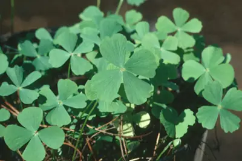

pranet · 出典付きの植物図鑑
dwarf waterclover
Marsilea minuta L. · Marsileaceae

Marsilea minuta, or dwarf waterclover is a species of aquatic fern in the family Marsileaceae. It is not to be confused with Marsilea minuta E.Fourn. 1880, which is a synonym for Marsilea vestita. Other common names include gelid waterklawer, small water clover, airy pepperwort, and pepperwort, though the lattermost also applies to plants in the genus Lepidium. In French it is called marsilea à quatre feuilles and petite marsilée, the latter appearing to be a calque with the Latin botanical name. In Chinese it is 南国田字草, literally "southern field word grass," referencing the similarity of the leaflet shape to the Chinese character for "field." The Koch Rajbongshi people and Garo people call it shusni shak. It is called 'শুশনি শাক' in Bengali. In parts of India it can be called sunisanakka. In Indonesian it is semanggi, but this name also applies to Marsilea crenata. In Japanese it is nangokudenjiso and in Thai it is phakwaen. In Malaysian it is tapak itik. In the Philippines it is kaya-kayapuan.
出典: Wikipedia (en): Marsilea minuta · CC BY-SA 4.0
異名: Lemma minuta (L.) Desr., Marsilea aegyptiaca Wall., Marsilea brachycarpa A.Braun, Marsilea brachypus A.Braun, Marsilea cornuta (A.Braun) A.Braun, Marsilea coromandelica Burm., Marsilea crenata C.Presl, Marsilea crenulata Desv., Marsilea diffusa Lepr. ex A.Br., Marsilea erosa Willd., Marsilea fimbriata Schumach., Marsilea gracilenta A.Braun, Marsilea kedarmalii Bhardwaja, Gena & D'Souza, Marsilea maheshwarii Gopal, Marsilea major (Haines) Chowdhury, Marsilea mearnsii Christ, Marsilea microcarpa A.Braun, Marsilea perrieriana C.Chr., Marsilea poonensis Kolh., Marsilea sinensis Hand.-Mazz.
同定や利用は自己責任でお願いします。この図鑑だけを根拠に野生の植物を食べないでください。
出典
- 学名: World Flora Online Plant List 2026-06 · CC0 1.0
- 名前: Wikipedia の記事名と Wikidata · CC0 1.0（Wikidata）。記事名は事実
- 説明: Wikipedia (en): Marsilea minuta · CC BY-SA 4.0
- 食用・毒性: World Checklist of Useful Plant Species (Diazgranados et al. 2020, RBG Kew) · CC BY 4.0
- 分布: World Checklist of Vascular Plants (WCVP), RBG Kew, version 2026-06-04 · CC BY 3.0
このページは pranet のデータから自動生成しています。コードは MIT、データは項目ごとのライセンス（説明）。